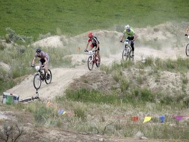
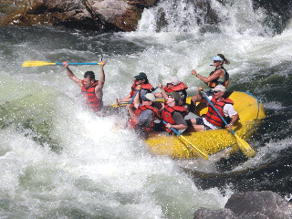

Alaska Vacations | Montana Mountain Bike | Montana River Trips | Hawaii - Multisport

In only seven days, this wonderful itinerary offers a representative cross section of Alaska from the varied wilderness interior to the rugged maritime environments, traversing three major mountain ranges and hundreds of miles of marine sanctuary and coastline in this tour accessible to all. If longing to see some of the real Alaska, but don't care to camp, then this is the tour for you.

We've chosen some of the best cycling routes in Montana for your perusal. They're graded by difficulty and length, so you can find a short, easy ride that's just right for you and your family, or a longer multi-day adventure. Go to the index below for a list and description of the currently-available rides. We're adding more rides all the time, so check back before you throw your bikes on the rack and head for the Big Sky Country.

Big Sky Country offers some of the most exciting white water rafting and scenic river trips in the nation. From Montana's snowy peaks and the Yellowstone Plateau, pristine waters converge and flow through spectacular canyons and valleys. Experience the thrill of whitewater on a raft trip down the Alberton Gorge, near Missoula, or the tranquil beauty of the wild and scenic Upper Missouri, near Fort Benton. You can explore Montana's rivers in many ways, Compass Adventure Tours offers a variety of trips on driftboats, rafts, kayaks and canoes.

Balmy island evenings, amber sunsets, palm-fringed white and black sand beaches, lush green tropical rainforests, spectacular vistas of mountains and the crashing surf, the thrill of watching red-hot lava flow into the blue sea — this is the Big Island of Hawaii. You’ll explore on country roads the very best parts of the largest of the 124 islands that comprise the state of Hawaii.
| Prices: | ||
|---|---|---|
| Montana | 7 days | 1000$ |
| Alaska | 5 days | 1000$ |
| Hawaii | 7 days | 2000$ |